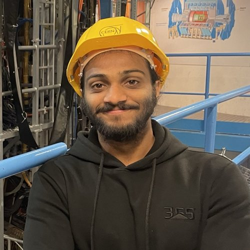
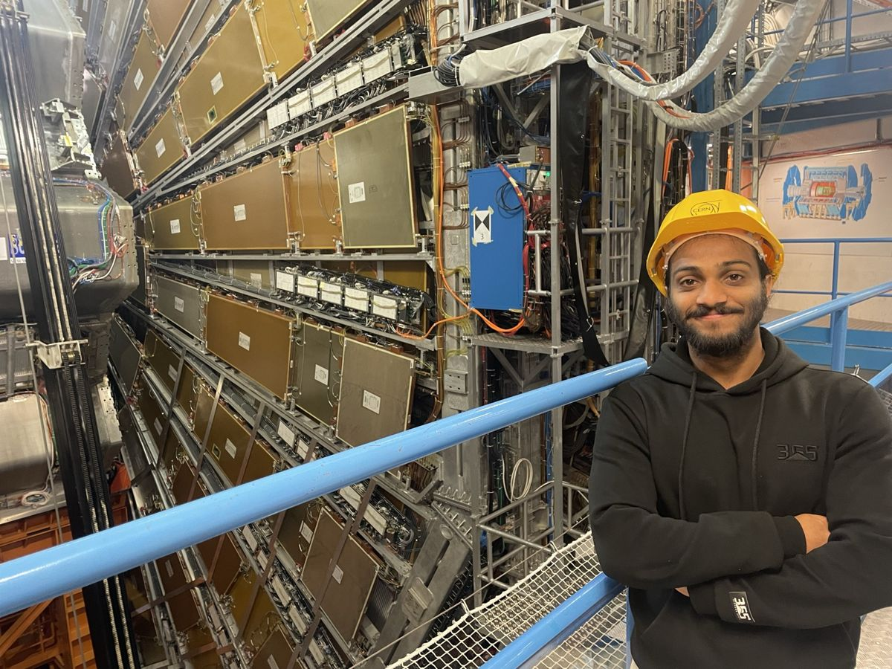
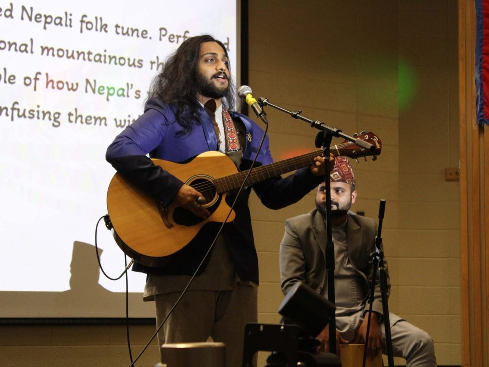
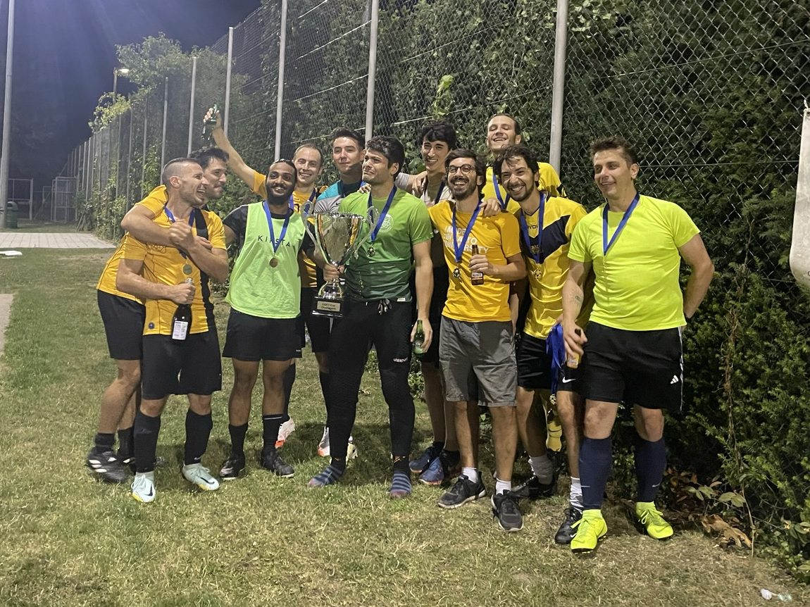
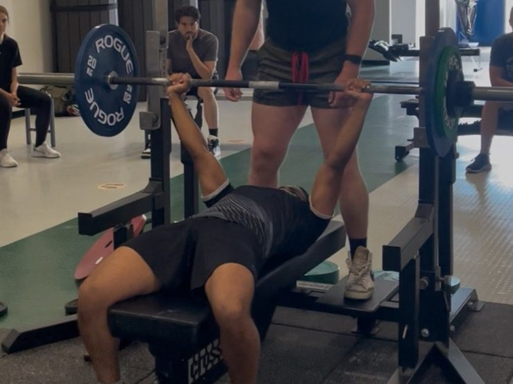
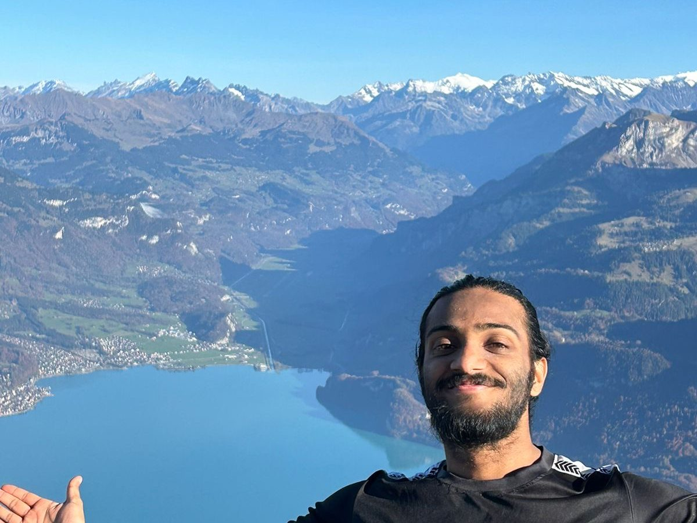

Hi, I'm Pratik.
Physics Ph.D. Candidate · Michigan State University · ATLAS Experiment, CERN
I grew up in Nepal and I'm now a Ph.D. candidate in physics at Michigan State University, where I find small signals in huge, noisy datasets from the ATLAS experiment at CERN. I look for new physics, specifically sources of CP violation that could explain why the universe contains more matter than antimatter. My work involves statistical measurement, uncertainty quantification, Monte Carlo simulation, and machine learning in C++ and Python. I'm now seeking quantitative research roles.

Highlights
- Estimation and uncertainty quantification: led the derivation of the photon-isolation scale factor and data-driven shift, which will be used in the official ATLAS Run 3 recommendation, and applied a new method in ATLAS to quantify their systematic uncertainties.
- Machine learning for signal detection: boosted-decision-tree and neural-network classifiers to separate rare signal from heavy background and to optimize search sensitivity.
- Bias control: quantifying how selection choices distort measured distributions, the same problem as overfitting and look-ahead bias in backtesting.
- Monte Carlo simulation: extensive use and cross-comparison of event generators (MadGraph, Sherpa, Powheg, PYTHIA) and custom Python/C++ simulations.
- Engineering: Python and C++ pipelines over billions of collision events on high-performance computing clusters and the worldwide LHC grid.
My path
At Reed (B.A., 2018 – 2022) I became the first Nepali undergraduate nuclear reactor operator, licensed to run the college's TRIGA research reactor, and led independent radiation-measurement projects. I spent my summers on research at CERN, Harvard, and the University of Mississippi.
In 2022 I started graduate school at Michigan State University (M.S. 2022 – 2025, Ph.D. in progress) and joined the ATLAS experiment. There I've worked on Higgs boson measurements, CP-violation studies, and detector calibration. Most of that work is statistics under uncertainty: estimating effects that are small compared with the noise, controlling systematic biases, and checking that results hold up.

Next, I want to bring that rigor to quantitative finance, where the problem is the same: find a real signal in noisy data and be honest about the uncertainty. I'm currently in the Erdős Institute's Quantitative Finance Bootcamp. See my quant projects, physics research, experience, teaching and outreach, or get in touch.
Outside the lab
Outside of physics I play soccer, lift, hike, and play music.



